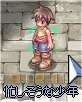
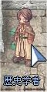
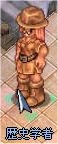
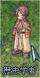
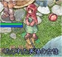
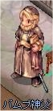
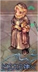
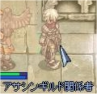
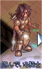
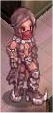

画像にリンクがはってあるものは、クリックすると別窓で大きめサイズが表示されます。
[忙しそうな少年]
所在地；プロンテラ(248,212) |
|  |
[歴史学者]
所在地；ジュノー(311,195) |
  |
[歴史学者ロダプリオン]
所在地；モロク5時方向旅館内2F奥 |
  |
[歴史学者モンド]
所在地；ミョルニール山脈01(mjolnir_01:135,168) |
|  |
[カヌー]
所在地；ミョルニール山脈01(mjolnir_01:313,269) |
 |
[イムブルリア]
所在地；ミョルニール山脈01(mjolnir_01:313,268) |
|  |
[バムプ神父]
所在地；プロンテラ大聖堂奥の室内 |
|  |
[ビスカス神父]
所在地；プロンテラ大聖堂奥の室内 |
|  |
[アサシンギルド関係者]
所在地；ソグラド砂漠16(moc_fild16)12時方向 |
  |
[ジャック]
所在地；モロク秘密の酒場前 |
   |
[リテルン]
所在地；モロク秘密の酒場内 |
  |
[マスター]
所在地；モロク秘密の酒場内 |
  |
[タオ]
所在地；モロク秘密の酒場内奥 |
   |
[マルザナ]
所在地；モロク秘密の酒場内奥 |
  |
back
(c) Gravity Co., Ltd. & Lee MyoungJin(studio DTDS). All rights reserved.
(c) GungHo Online Entertainment, Inc. All Rights Reserved.
当コンテンツの再利用（再転載・配布など）は、禁止しています。